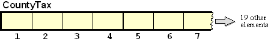
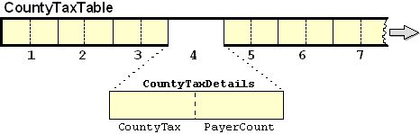
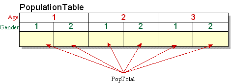
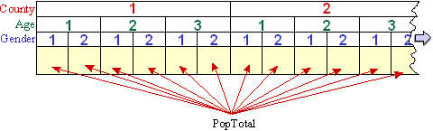
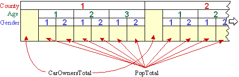
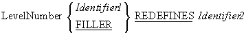

Creating Tables - syntax and semantics
-
Introduction
Unit aims, objectives, prerequisites.
-
Declaring a single dimension table
In this section we demonstrate how the
OCCURS clause is used to declare a single dimension
table. We also show how it may be used to declare a variable length table.
-
Group items as elements
The elements of a table do not have to be elementary items - they can be group items. This
section demonstrates how to create a table, the elements of which, are group items.
-
Declaring multi-dimension tables
This section demonstrates how nested OCCURS clauses are
used to create multi-dimension tables.
-
Creating pre-filled tables with the REDEFINES clause.
This section first demonstrates non-table related uses for the REDEFINES clause and then
shows how it may be used to create pre-filled tables. The new COBOL'85 approaches to
creating pre-filled tables and to initialising tables are also demonstrated.
In the "Using Tables" tutorial we examined why we might want to use tables as part of the
solution to a programming problem.
In this tutorial we examine the syntax and semantics of table declaration. We demonstrate
how to create single and multi-dimension tables, how to create variable length tables and
how to set up a table pre-filled with data..
By the end of this unit you should -
-
Understand how the
OCCURS clause is used in a table
declaration.
- Know how to use a subscript to access the elements of a table.
- Be able to create a table in which the elements are group items.
-
Know how to set up a multi-dimension table using nested
OCCURS clauses.
-
Understand how the
REDEFINES clause may be used to give
different names and descriptions to the same area of storage.
-
Be able to use the
REDEFINES clause to set up a table
pre-filled with data.
- Introduction to COBOL
- Declaring data in COBOL
- Basic Procedure Division Commands
- Selection Constructs
- Iteration Constructs
- Introduction to Sequential files
- Processing Sequential files
- Print files and variable length records
- Sorting and Merging files
- Using Tables
In the "Using Tables" tutorial we saw how would could use a table to hold county tax totals. We
even had a brief look at how that table might be created.
In this section we will examine, in more detail, how a single dimension table, like the
CountyTaxTable, may be created.
Most programming languages use the term "array" to describe repeated, or multiple- occurrence,
data-items. COBOL uses the term "table".
The repeated components of a table are referred to as its elements. In the program text,
a table is declared by specifying -
- the type, or structure, of a single data-item (element)
- the number of times the data-item (element) is repeated.
Tables have the following attributes
- a single name is used to identify all the elements
- individual elements can be identified using an "index" or "subscript"
- all elements have the same type or structure
-
COBOL arrays/tables, always start at element 1 (not 0) and go on to the maximum size of the
table.
-
We indicate which element we want by using the element name followed by the index/subscript
in brackets (see examples below).
A table is stored in memory as a contiguous block of bytes.
Tables are declared using an extension to the
PICTURE clause, called the
OCCURS clause. To declare a table, we define the type and
size of the table element, and then use the OCCURS clause to
specify how many times the element OCCURS (see the examples
below).
The OCCURS clause may appear before, or after, the
PICTURE clause that defines the element. For instance, we
might declare the CountyTaxTable as -
01 CountyTax PIC 9(8)V99 OCCURS 26 TIMES.
or as
01 CountyTax OCCURS 26 TIMES PIC 9(8)V99.
We can represent the county tax table diagrammatically as follows;

In the example above, we can only refer to the individual elements of the table (see rule 2
for subscripts below). We can refer to CountyTax(1) or CountyTax(12) but we have no name for
the whole table. It is often very useful to be able to refer to the whole table and so it is
usual to define a table as subordinate to a group item which is named to indicate the whole
table. For example the CountyTax table would probably be described as -
01 CountyTaxTable.
02 CountyTax PIC 9(8)V99 OCCURS 26 TIMES.
When declared like this we can refer to CountyTax(sub) when we want to access an
element of the table and CountyTaxTable when we want to refer to the whole table.
This section of the tutorial introduces simple version of the
OCCURS clause but keep in mind that the
OCCURS clause contains a number of other entries; including
entries for declaring variable length tables and for satisfying the special requirements of the
SEARCH verb.
The syntax for the simple version of the OCCURS clause is -
OCCURS TableSize#l TIMES
Rules for the OCCURS clause
-
The
OCCURS clause cannot appear in the description of a
level 77 data name.
-
Any data-item whose description includes an occurs clause must be subscripted when referred
to.
-
Any data-item which is subordinate to a group item whose description contains an occurs
clause must be subscripted when referred to.
Rules for subscripts
-
Each subscript must be either a positive integer, a data name which represents one,
or a simple expression which evaluates to one.
-
The subscript must contain a value between 1 and the number of elements in the table/array
inclusive.
- When more than one subscript is used they must be separated from one another by commas.
-
One subscript must be specified for each dimension of the table. There must be 1 for a one
dimension table, 2 subscripts for a two dimension table and 3 for a three dimension table.
-
The first subscript applies to the first
OCCURS clause,
the second applies to the second OCCURS clause, and so
on.
- Subscripts must be enclosed in parentheses/brackets.
Examine the example table declarations below and then attempt to answer the self assessment
questions.
WORKING-STORAGE SECTION.
01 DeptTotalsTable.
02 DeptTotal PIC 9(6) OCCURS 7.
01 VATRateTable.
02 VATRate PIC 99V99 OCCURS 3.
01 RatesTable VALUE ZEROES.
88 TableNotPrimed VALUE ZEROS.
02 ExchangeRate OCCURS 50 TIMES PIC 9(5)V99.
01 MonthName PIC X(3)OCCURS 12 TIMES.
A variable-length table may be declared using the
OCCURS clause syntax below.
OCCURS SmallestSize#l TO
LargestSize#l TIMES
DEPENDING ON ActualSize#i
The amount of storage allocated to a variable-length table is defined by the value of
LargestSize and is assigned at compile time. Standard COBOL has no mechanism for dynamic
memory allocation, although the coming OO-COBOL standard addresses this problem.
Rules
- ActualSize#i cannot itself be a data-item in a table.
-
This format may only be use to vary the number of elements in the first dimension of a
table.
Example
01 BooksReservedTable.
02 BookId PIC 9(7) OCCURS 1 TO 10
DEPENDING ON NumOfReservations.
The elements of a table do not have to be elementary items. An element can be a group item. In
other words each element can be subdivided into two, or more, subordinate items.
Let's illustrate this with an example. Suppose the specification of the County Tax Report
program were changed to say that, as well as the amount of tax paid in each county, the report
should also display the number of tax payers.
One way we could satisfy this change to the specification would involve setting up separate
tables to hold the county tax totals and county tax payer counts. For example-
01 CountyTaxTable.
02 CountyTax PIC 9(8)V99 OCCURS 26 TIMES.
01 CountyPayerTable.
02 PayerCount PIC 9(7) OCCURS 26 TIMES.
But we could also solve the problem by setting up just a single table and defining each element
as a group item. The group item would consist of the
CountyTax and the PayerCount.
For example -
01 CountyTaxTable.
02 CountyTaxDetails OCCURS 26 TIMES.
03 CountyTax PIC 9(8)V99.
03 PayerCount PIC 9(7).
In this example, CountyTaxTable is the name for the whole table and each element is
called CountyTaxDetails. The element is further subdivided into the elementary items
CountyTax and PayerCount.
We can represent this table diagrammatically as follows;

To refer to an item that is subordinate to table element, the same number of subscripts must be
used as when referring to the element itself. So, to refer to
CountyTaxDetails, CountyTax and PayerCount in the table above, the form
CountyTaxDetails(sub), CountyTax(sub) and PayerCount(sub) must be used.
Q1. Examine the CountyTaxTable described above. Suppose that in our program we have the
following statements;
MOVE ZEROS TO CountyTax(3)
MOVE 67 TO PayerCount(6)
MOVE 1234.45 TO CountyTax(4)
MOVE ZEROS TO CountyTaxDetails(4)
MOVE ZEROS TO CountyTaxTable
What effect on the table will each of these statements have? Copy the table diagram above, fill in
your answer and then click on the animation icon below to see the animated solution.

Q2. What is the difference between the following data descriptions;
01 CountyTaxTable1.
02 CountyTaxDetails OCCURS 26 TIMES.
03 CountyTax PIC 9(8)V99.
03 PayerCount PIC 9(7).
01 CountyTaxTable2.
02 CountyTaxDetails
03 CountyTax PIC 9(8)V99 OCCURS 26 TIMES.
03 PayerCount PIC 9(7)OCCURS 26 TIMES.
This example program implements the County Tax Report program. It has some interesting features;
- Each element of the table is a group item subdivided into CountyTax and PayerCount.
-
The CountyTax table is subordinate to the data-item CountyTaxTable and this allows the table
to be initialised to
ZEROS with the statement
MOVE ZEROS TO CountyTaxTable
-
One of the data-items subordinate to the table element is monitored by the condition name -
NoOnePaidTax. This means that a separate NoOnePaidTax condition name is
attached to each element of the table. When we refer to NoOnePaidTax in the program,
we must use a subscript because we need to tell the computer which condition name, attached
to which element, we are referring to. In other words we need to specify that the
NoOnePaidTax we are referring to is the one attached to the first element or to the
second element or to the third element and so on.
>>SOURCE FORMAT IS FREE
IDENTIFICATION DIVISION.
PROGRAM-ID. CountyTaxTable.
AUTHOR. Michael Coughlan.
ENVIRONMENT DIVISION.
INPUT-OUTPUT SECTION.
FILE-CONTROL.
SELECT TaxFile ASSIGN TO "TAXES.DAT"
ORGANIZATION IS LINE SEQUENTIAL.
DATA DIVISION.
FILE SECTION.
FD TaxFile.
01 TaxRec.
88 EndOfTaxFile VALUE HIGH-VALUES.
02 PAYENum PIC 9(8).
02 CountyCode PIC 99.
02 TaxPaid PIC 9(7)V99.
WORKING-STORAGE SECTION.
01 CountyTaxTable.
02 CountyTaxDetails OCCURS 26 TIMES.
03 CountyTax PIC 9(8)V99.
03 PayerCount PIC 9(7).
88 NoOnePaidTax VALUE ZEROS.
01 Idx PIC 99.
01 CountyTaxLine.
02 FILLER PIC X(7) VALUE "County".
02 PrnCounty PIC Z9.
02 FILLER PIC X(7) VALUE " Tax = ".
02 PrnTax PIC $$$,$$$,$$9.99.
02 FILLER PIC X(12) VALUE " Payers = ".
02 PrnPayers PIC Z,ZZZ,ZZ9.
PROCEDURE DIVISION.
Begin.
OPEN INPUT TaxFile
MOVE ZEROS TO CountyTaxTable
READ TaxFile
AT END SET EndOfTaxFile TO TRUE
END-READ
PERFORM UNTIL EndOfTaxFile
ADD TaxPaid TO CountyTax(CountyCode)
ADD 1 TO PayerCount(CountyCode)
READ TaxFile
AT END SET EndOfTaxFile TO TRUE
END-READ
END-PERFORM
PERFORM DisplayCountyTaxes VARYING Idx FROM 1 BY 1
UNTIL Idx GREATER THAN 26
CLOSE TaxFile
STOP RUN.
DisplayCountyTaxes.
IF NOT NoOnePaidTax(Idx)
MOVE Idx TO PrnCounty
MOVE CountyTax(Idx) TO PrnTax
MOVE PayerCount(Idx) TO PrnPayers
DISPLAY CountyTaxLine
END-IF.
The Census Office has provided us with a file containing the AgeCategory, Gender, CountyCode and
car ownership information of every person in the country. The CensusFile is an unordered
sequential file and its records have the following description-
| Name |
Description |
Value |
| CountyCode |
PIC 99
|
1-26
|
| AgeCategory |
PIC 9
|
1 = Child
2 = Teen
3 = Adult
|
| Gender |
PIC 9
|
1 = Female
2 = Male
|
| CarOwner |
PIC X
|
Y/N
|
Suppose we were asked to write a program to produce a report displaying the number of males, and
the number of females, in each AgeCategory - Child, Teen and Adult. How would we go about it?
One way to solve this problem, would be to sort the file on AgeCategory and Gender, and then
treat it as a control break problem.
Another way to solve the problem, would be to set up a number of total variables and then, when
a record is read, use the AgeCategory and Gender information to tell us which total to
increment.
In this particular problem there are only six totals required - CFTotal, CMTotal, TFTotal,
TMTotal, AFTotal, AMTotal - so a solution which involves creating these totals and using an
EVALUATE to decide which total to increment, would not be
entirely out of the question.
But instead of an EVALUATE-based solution let's consider
using a table to hold the totals. What kind of a table might we require? We can see that six
totals are needed, so we might think that the six element, single-dimension, table shown below
might do the trick.
01 PopulationTable.
02 PopTotal PIC 9(6) OCCURS 6 TIMES.
The problem with this is - what can we use as an index into the table? No single item in the
record will do. The index must be a combination of the
AgeCategory and the Gender. Of course, we could use an
EVALUATE, as shown below, to map the AgeCategory and
Gender to a combined index value.
EVALUATE AgeCategory ALSO Gender
WHEN 1 ALSO 1 MOVE 1 TO Idx
WHEN 1 ALSO 2 MOVE 2 TO Idx
WHEN 2 ALSO 1 MOVE 3 TO Idx
etc...
END-EVALUATE.
Or we could manipulate the values arithmetically to map them to the index value. For instance
COMPUTE Idx = ((AgeCategory -1) * 2) + Gender
But both these methods lack something in elegance and will be difficult to extend when, as I'm
sure you have anticipated, we ask for the population information to be provided for each county.
The best, and most extensible, solution to the problem is to set up a two dimension table to
hold the totals. Since the elements of a two dimension table require two subscripts, we can use
the AgeCategory and the Gender to identify the particular element we need to access.
A multi-dimension table is declared by nesting
OCCURS clauses. So we can define the two dimension
PopulationTable as follows -
01 PopulationTable.
02 Age OCCURS 3 TIMES.
03 PopTotal PIC 9(6)OCCURS 2 TIMES.
While the table description shown above is correct; it is not, perhaps, as understandable as it
might be. You might prefer to define the table as shown below.
01 PopulationTable.
02 Age OCCURS 3 TIMES.
03 Gender OCCURS 2 TIMES.
04 PopTotal PIC 9(6).
We can represent this table diagrammatically as -

Two dimension tables are sometimes represented as a row and column grid, but that representation
has the flaw that it does not accurately reflect the data hierarchy.
The diagram above uses the correct representation for a two dimension table because it expresses
the data hierarchy inherent in the table description where one
OCCURS clause is subordinate to the another.
Sketch the diagram above on a piece of paper and then show how the contents of the table are
effected when the following statements are executed.
MOVE ZEROS TO PopulationTable
MOVE 123 TO PopTotal(3,1)
MOVE 456 TO Gender(3,2)
ADD 1255 TO PopTotal(2,2)
MOVE ZEROS TO Age(3)
Click on the animation icon below to see an animated answer.
Let's suppose that the specification for the Population Report problem changes so that instead
of just producing the Age/Gender totals for the country we are asked to display these totals for
each county. How can we solve the problem?
If we are asked to display the six Age/Gender totals for each county then we will obviously need
to store 26 instances of the Age/Gender totals. We could of course do this as
01 CountyTotal01.
02 Age OCCURS 3 TIMES.
03 Gender OCCURS 2 TIMES.
04 PopTotal PIC 9(6).
01 CountyTotal02.
02 Age OCCURS 3 TIMES.
03 Gender OCCURS 2 TIMES.
04 PopTotal PIC 9(6).
etc....
But by now you are aware of the arguments against this approach so let's go directly to the
table based solution.
What we want to do is to create a 26 element table, each element of which contains the two
dimension table defined above. Two dimensions plus one dimension equals three dimensions. What
we need is a three dimension table.
Creating a three dimension table from the existing two dimension table is as simple as inserting
another occurs clause. The three dimension PopulationTable may be defined as shown below.
To access the PopTotal element three subscripts are now required, one for each
OCCURS clause.
01 PopulationTable.
02 County OCCURS 26 TIMES.
03 Age OCCURS 3 TIMES.
04 Gender OCCURS 2 TIMES.
05 PopTotal PIC 9(6).
This table may be represented diagrammatically as follows -

Sketch the diagram above on a piece of paper and then show how the contents of the table are
effected when the following statements are executed.
MOVE ZEROS TO County(1)
MOVE ZEROS TO Age(2,3)
MOVE ZEROS TO PopTotal(2,1,2)
MOVE 56 TO PopTotal(1,3,2)
MOVE 12 TO PopTotal(2,1,1)
MOVE ZEROS TO PopulationTable
Click on the animation icon below to see an animated answer.
As well as the AgeCategory, Gender and CountyCode fields, the Census File provides information
on the car ownership of every person in the country.
Suppose that the specification for the Population Report is changed so that as well as
displaying the Age/Gender combination totals for each county, we are asked to display a total
showing the number of people who own cars in each county.
One perfectly acceptable way of solving the problem would be to set up a separate, 26 element,
CarOwers table to hold the totals.
But suppose we wanted to store the car owners totals in the existing PopulationTable. How could
we reorganise the PopulationTable to allow this to be done? At what point in the existing
PopulationTable would we insert the CarOwnersTotal.
Let's examine the existing table and see if we can figure out where the CarOwnersTotal should
go.
01 PopulationTable.
02 County OCCURS 26 TIMES.
03 Age OCCURS 3 TIMES.
04 Gender OCCURS 2 TIMES.
05 PopTotal PIC 9(6).
We can't add CarOwnersTotal to the same level as the PopTotal because that would
create six CarOwnersTotals for each county - one for each Age/Gender combination. We only want
one CarOwnersTotal for each county, so we must make the CarOwnersTotal subordinate to the
OCCURS clause that deals with counties.
When we do this, as shown in the table description below, what we are saying is that
County is a 26 element table and each element consists of the CarOwnersTotal and a
two dimension table containing the rest of the population information for the county.
01 PopulationTable.
02 County OCCURS 26 TIMES.
03 CarOwnersTotal PIC 9(6).
03 Age OCCURS 3 TIMES.
04 Gender OCCURS 2 TIMES.
05 PopTotal PIC 9(6).
We can represent the declaration above diagrammatically as follows -

One question we might have with this arrangement is - how many subscripts are required when we
refer to CarOwnersTotal? To answer this we can frame a general rule -
We need one subscript for each superordinate
OCCURS clause and an additional one if the item itself
contains an OCCURS clause.
Applying this rule, CarOwnersTotal only needs one subscript (only one superordinate
OCCURS clause), County only requires one subscript
(no superordinate OCCURS clause but contains an
OCCURS clause itself), Age requires two subscripts
(one superordinate OCCURS clause and contains an
OCCURS clause itself) and PopTotal requires three
subscripts (three superordinate OCCURS clauses).
Examples of use
MOVE ZEROS TO County(23)
ADD 1643 TO CarOwnersTotal(15)
MOVE ZEROS TO Age(17,3)
MOVE ZEROS TO Gender(18,3,2)
ADD 56 TO PopTotal(12,3,2)
When a file that contains different types of record is declared in the
FILE SECTION, a record description is created for each
record type. But all these record descriptions map on to the same area of storage. They are in
effect, redefinitions of the area of storage. The
REDEFINES clause allows us to achieve the same effect for
units smaller than a record and in the other parts of the
DATA DIVISION, not just the
FILE SECTION.
The REDEFINES clause allows a programmer to give different
data descriptions to the same area of storage.
Although recent versions of COBOL allow pre-filled tables to be created without using the
REDEFINES clause, these new approaches are only successful
when a small amount of data is involved. The standard way to create pre-filled tables in COBOL
is to use the REDEFINES clause.
Example 1
Some COBOL statements, like the UNSTRING, require their receiving fields
to be alphanumeric (PIC X) data-items. This is inconvenient if the value of the data-item is
actually numeric because then a MOVE is required to place
the value into a numeric item. If the value contains a decimal point then this creates even more
difficulties.
For example, suppose an UNSTRING statement has just
extracted the text value "1234567" from a string and we want to move this value to a numeric
item described as PIC 9(5)V99. An ordinary MOVE is not going
to work because the computer will not know that we actually want the item treated as if it were
the value 12345.67.
The REDEFINES clause allows us to solve this problem neatly
because we can UNSTRING the number into TextValue and
then treat TextValue as if it were described as PIC 9(5)V99. For instance -
01 TextValue PIC X(7).
01 NumericValue REDEFINES TextValue PIC 9(5)V99.
Example 2
The REDEFINES clause is not just used
to create pre-filled tables. It is used whenever a programmer needs to give different data
descriptions to the same area of storage.
For instance, suppose we accept a date from the user and that sometimes the date has the format
yyyymmdd, sometimes it is a European date with the format ddmmyyyy, and somtimes it is a US date
with the format mmddyyyy. A code accepted with the date allows us to detect the type of date
entered.
How can we arrange matters so that no matter which type of date is entered we can retrieve the
year, month and day part of the date correctly?
If you think about this for a moment you should see that the programming is going to be messy.
We'll have to set up three separate date variables and, when we accept the date, we will have to
extract the day, month and year parts and put them into the appropriate elementary items of the
target date.
On the other hand, we could use the REDEFINES clause to give
different names and descriptions to the area of storage holding the date so that we can access
the correct day, month and year fields without recourse to special programming. For instance, if
define the InputDate as -
01 InputDate.
02 DateType PIC 9.
88 DateIsSort VALUE 1.
88 DateIsEuro VALUE 2.
88 DateIsUS VALUE 3.
02 SortDate.
03 SortYear PIC 9(4).
03 SortMonth PIC 99.
03 SortDay PIC 99.
02 EuroDate REDEFINES SortDate.
03 EuroDay PIC 99.
03 EuroMonth PIC 99.
03 EuroYear PIC 9(4).
02 USDate REDEFINES SortDate.
03 USMonth PIC 99.
03 USDay PIC 99.
03 USYear PIC 9(4).
we can use statements like -
EVALUATE TRUE
WHEN DateIsSort
DISPLAY "SortDate format is yyyy-mm-dd "
DISPLAY SortYear "-" SortMonth "-" SortDay
WHEN DateIsEuro
DISPLAY "EuroDate format is dd-mm-yyyy "
DISPLAY EuroDay "-" EuroMonth "-" EuroYear
WHEN DateIsUS
DISPLAY "USDate format is mm-dd-yyyy "
DISPLAY USMonth "-" USDay "-" USYear
END-EVALUATE
- and still get the correct values displayed.
Example 3
The REDEFINES clause is also useful
when we need to treat a numeric item as if it had its decimal point in different places. For
instance the value 12345 is treated as if it were 12.345 if we refer to 10Rate, 123.45 if
we refer to 100Rate, and 1234.5 if we refer to 1000Rate.
01 Rates.
02 10Rate PIC 99V999.
02 100Rate REDEFINES 10Rate PIC 999V99.
02 1000Rate REDEFINES 10Rate PIC 9999V9.
Animated versions of the examples above

REDEFINES rules
-
The
REDEFINES clause must immediately follow Identifier1
(i.e. the REDEFINES must come before the
PIC.)
-
The level numbers of Identifier1 and Identifier2 must be the same and cannot be 66 or 88.
-
The data description of Identifier2 cannot contain an
OCCURS clause (i.e a table element cannot be redefined.)
-
If there are multiple redefinitions of the same area of storage then they must all redefine
the data-item that originally defined the area. (See the InputDate and Rates examples above)
-
The redefining entries cannot contain
VALUE clauses
except in condition name entries.
-
No entry with a level number lower (i.e. higher in the hierarchy) than the level number of
Identifier2 and Identifier1 can occur between Identifier2 and Identifier1.
-
The entries redefining the area must immediately follow those that originally defined it.
- There can be no intervening entries that define additional character positions.
The REDEFINES clause can be used to create a pre-filled table by applying the following
procedure -
-
Reserve an area of storage and use the
VALUE clause to
fill it with the values required in the table.
-
Then, use the
REDEFINES clause to redefine the area of
memory as a table.
For example, if we want to declare a table pre-filled with the names of the months, the first
step is to reserve an area of storage and fill it with the names of the months -
01 MonthTable.
02 MonthValues.
03 FILLER PIC X(18) VALUE "January February".
03 FILLER PIC X(18) VALUE "March April".
03 FILLER PIC X(18) VALUE "May June".
03 FILLER PIC X(18) VALUE "July August".
03 FILLER PIC X(18) VALUE "SeptemberOctober".
03 FILLER PIC X(18) VALUE "November December".
then we redefine is as a table as follows -
02 FILLER REDEFINES MonthValues.
03 Month OCCURS 12 TIMES PIC X(9).
Examine the animation below to view this and other examples.
In this example, we revisit the County Tax Report program. In the previous version we had to
indicate the county by displaying the CountyCode. This was not very satisfactory because
it meant the users had to know which code corresponded to which county. In this version we use a
pre-filled table of county names to allow us to display the name of the county.
The new parts of the program are coloured red.
>>SOURCE FORMAT IS FREE
IDENTIFICATION DIVISION.
PROGRAM-ID. CountyTaxTable.
AUTHOR. Michael Coughlan.
ENVIRONMENT DIVISION.
INPUT-OUTPUT SECTION.
FILE-CONTROL.
SELECT TaxFile ASSIGN TO "TAXES.DAT"
ORGANIZATION IS LINE SEQUENTIAL.
DATA DIVISION.
FILE SECTION.
FD TaxFile.
01 TaxRec.
88 EndOfTaxFile VALUE HIGH-VALUES.
02 PAYENum PIC 9(8).
02 CountyCode PIC 99.
02 TaxPaid PIC 9(7)V99.
WORKING-STORAGE SECTION.
01 CountyTaxTable.
02 CountyTaxDetails OCCURS 26 TIMES.
03 CountyTax PIC 9(8)V99.
03 PayerCount PIC 9(7).
88 NoOnePaidTax VALUE ZEROS.
01 Idx PIC 99.
01 CountyTaxLine.
02 PrnCounty PIC X(9).
02 FILLER PIC X(7) VALUE " Tax = ".
02 PrnTax PIC $$$,$$$,$$9.99.
02 FILLER PIC X(12) VALUE " Payers = ".
02 PrnPayers PIC Z,ZZZ,ZZ9.
01 CountyTable.
02 TableValues.
03 FILLER PIC X(9) VALUE "Antrim".
03 FILLER PIC X(9) VALUE "Armagh".
03 FILLER PIC X(9) VALUE "Carlow".
03 FILLER PIC X(9) VALUE "Cavan".
03 FILLER PIC X(9) VALUE "Clare".
03 FILLER PIC X(9) VALUE "Cork".
03 FILLER PIC X(9) VALUE "Derry".
03 FILLER PIC X(9) VALUE "Donegal".
03 FILLER PIC X(9) VALUE "Down".
03 FILLER PIC X(9) VALUE "Dublin".
03 FILLER PIC X(9) VALUE "Fermanagh".
03 FILLER PIC X(9) VALUE "Galway".
03 FILLER PIC X(9) VALUE "Kerry".
03 FILLER PIC X(9) VALUE "Kildare".
03 FILLER PIC X(9) VALUE "Kilkenny".
03 FILLER PIC X(9) VALUE "Laois".
03 FILLER PIC X(9) VALUE "Leitrim".
03 FILLER PIC X(9) VALUE "Limerick".
03 FILLER PIC X(9) VALUE "Longford".
03 FILLER PIC X(9) VALUE "Louth".
03 FILLER PIC X(9) VALUE "Mayo".
03 FILLER PIC X(9) VALUE "Meath".
03 FILLER PIC X(9) VALUE "Monaghan".
03 FILLER PIC X(9) VALUE "Offaly".
03 FILLER PIC X(9) VALUE "Roscommon".
03 FILLER PIC X(9) VALUE "Sligo".
03 FILLER PIC X(9) VALUE "Tipperary".
03 FILLER PIC X(9) VALUE "Tyrone".
03 FILLER PIC X(9) VALUE "Westmeath".
03 FILLER PIC X(9) VALUE "Waterford".
03 FILLER PIC X(9) VALUE "Wexford".
03 FILLER PIC X(9) VALUE "Wicklow".
02 FILLER REDEFINES TableValues.
03 CountyName OCCURS 32 TIMES PIC X(9).
PROCEDURE DIVISION.
Begin.
OPEN INPUT TaxFile
MOVE ZEROS TO CountyTaxTable
READ TaxFile
AT END SET EndOfTaxFile TO TRUE
END-READ
PERFORM UNTIL EndOfTaxFile
ADD TaxPaid TO CountyTax(CountyCode)
ADD 1 TO PayerCount(CountyCode)
READ TaxFile
AT END SET EndOfTaxFile TO TRUE
END-READ
END-PERFORM
PERFORM DisplayCountyTaxes VARYING Idx FROM 1 BY 1
UNTIL Idx GREATER THAN 26
CLOSE TaxFile
STOP RUN.
DisplayCountyTaxes.
IF NOT NoOnePaidTax(Idx)
MOVE CountyName(Idx) TO PrnCounty
MOVE CountyTax(Idx) TO PrnTax
MOVE PayerCount(Idx) TO PrnPayers
DISPLAY CountyTaxLine
END-IF.
The 1985 COBOL standard introduced a number of changes to tables. Among these changes was a
method that allowed pre-filled tables to be created without using the
REDEFINES clause. But this new method only works as as long
as the number of values is small. For large amounts of data the
REDEFINES clause is still required.
The new method works by assigning the values to a groupname defined over a table. For instance,
in the example below, the data-item Day actually declares the table but we have given the
table the overall group name - DayTable. Assigning the values to this groupname fills the
area of the table with the values.
01 DayTable VALUE "MonTueWedThrFriSatSun".
02 Day OCCURS 7 TIMES PIC X(3).
The 1985 COBOL standard also introduced some changes to the way tables are initialised.
In the previous versions of COBOL initialising a table was never a problem if the elements of
the table were elementary items. All that was required was to move the initialising value to the
table's group name. For instance, the statement
- MOVE ZEROS TO TaxTable - initialises the table below to zeros.
01 TaxTable.
02 CountyTax PIC 9(5) OCCURS 26 TIMES.
But initialising a table was much more difficult if each element was a group item that contained
different types of data. For example, in the table below, the
CountyTax part of the element has to be initialised to zeros and the CountyName part has
to be initialised to spaces. The only way do this is to initialise the items, element by
element, using an iteration.
01 TaxTable.
02 County OCCURS 26 TIMES.
03 CountyTax PIC 9(5).
03 CountyName PIC X(12).
At least that was the way it had to be done before the 1985 COBOL standard. Now the table can be
initialised by assigning an initial value to each part of an element using the
VALUE clause. The description below initialises the
CountyTax part of the element to zeros and the CountyName part to spaces.
01 TaxTable.
02 County OCCURS 26 TIMES.
03 CountyTax PIC 9(5) VALUE ZEROS.
03 CountyName PIC X(12) VALUE SPACES.